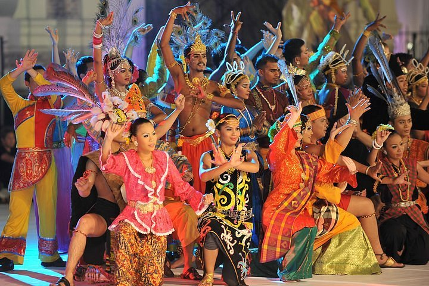
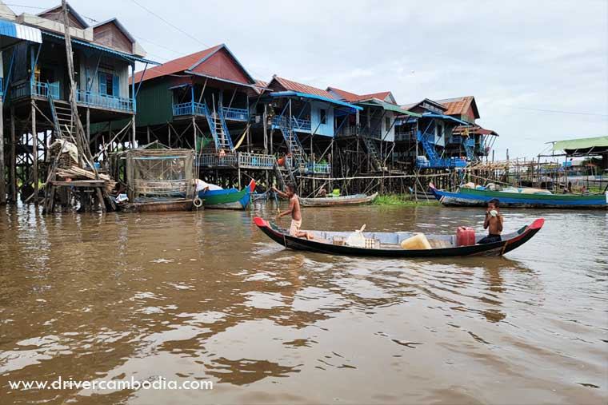
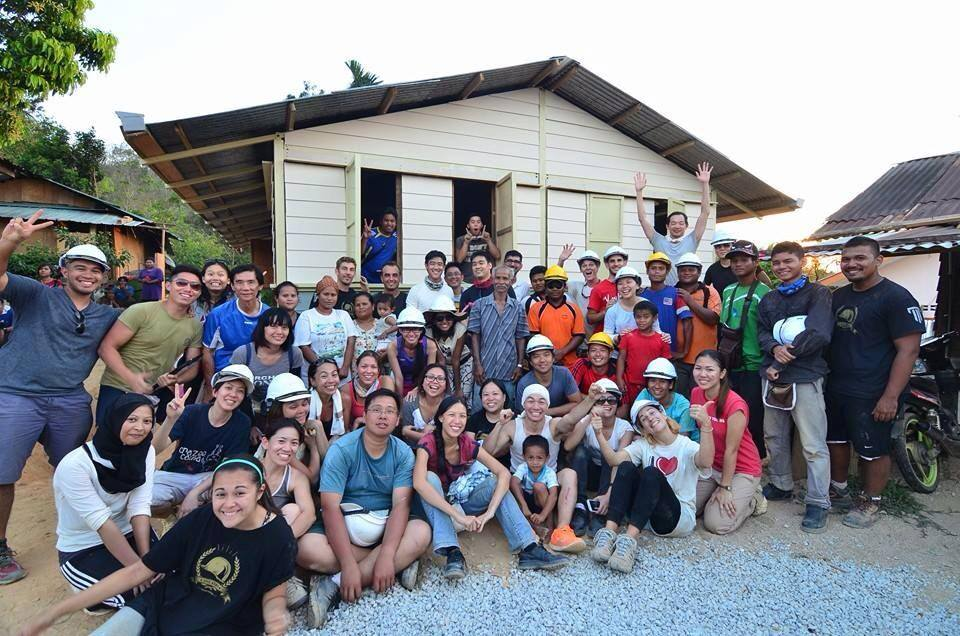
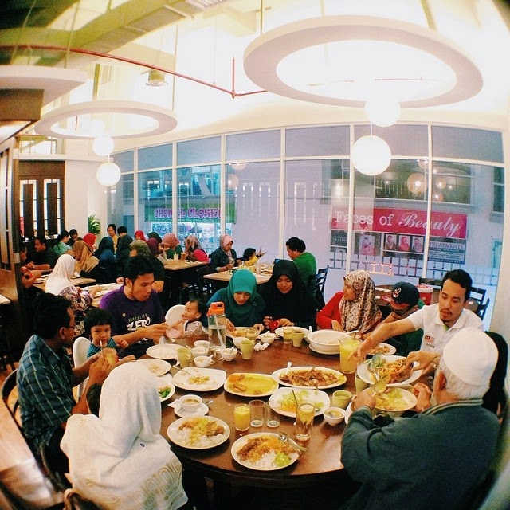

Local Markets
Kuala Selangor's bustling markets showcase local produce, crafts, and community interactions.

Community Festivals
The town hosts annual festivals highlighting traditional dances, music, and artisanal crafts.

Fishing Villages
Communities maintain traditional fishing practices, creating a close-knit maritime culture.
Art & Handicrafts
Local artists and craftsmen sell handmade goods reflecting Kuala Selangor's rich heritage.

Volunteer Programs
Community-driven initiatives such as river clean-ups and mangrove conservation.

Local Cuisine Sharing
Communities gather to share recipes and meals during cultural events.